Project vicinity — interactive map. Toggle the basemap (Carto default / Street / Standard / Topo) using the control in the upper right. Yellow pins mark the proposed Diversion on Rock Creek and the existing Rock Creek / Keefer Slough Bifurcation. Red dashed lines show the two overland corridors: Sand Creek North (~6 mi), rejoining Rock Creek near SR 99 via Sand Creek, and Sand Creek South (~4.4 mi). Cyan dashed lines trace Rock Creek and Keefer Slough. Hundreds of low rock weirs along both corridors would slow flow, spread it, and promote infiltration. Land control across the 4 corridor landowners (1 major NRCS-easement holder + 3 smaller) is a foundational early-work item.
Treated corridor length
~10.4 mi
6 mi north + 4.4 mi south
Rock Cr. watershed at intake
~25 sq mi
~1.1 mi upstream of bifurcation
Bifurcation split (Q100)
39 / 61
Rock Cr. / Keefer Sl., DWR 2D — shifted from 56/44 in 2011 FIS
Favorable surface infiltration
0.7 ft/day
RCRD Infiltration Study max for favorable Sand Cr. sites
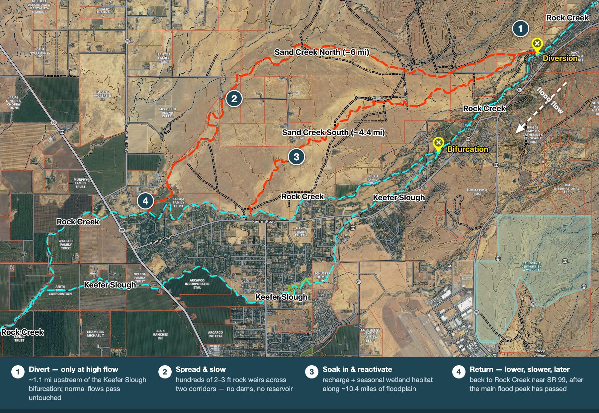
Loading overview…
Source documents referenced throughout
- CONCEPT — Rock-Creek-Floodplain-Reactivation-Concept-DRAFT.md (this project's stakeholder draft)
- NORD_A, B1–B5 — Town of Nord Small Communities Flood Risk Reduction Program Feasibility Study, Wood Rodgers for Butte County / DWR, Aug 2023 — Part A, B1 Geotechnical, B2 Geomorphic, B3 Environmental, B4 Appendix 7, B5 Appendices 8–11
- RCRD_INF — Rock Creek Reclamation District Infiltration Feasibility Study (PDF), Wood Rodgers / GeoSystems Analysis, Oct 2023
- SINGER — Singer Creek Preserve Habitat Development Plan Vol. 1, Restoration Resources for BCAG, 2008–2009
- CT_D3 — Studying the Flooding Issues Along Hwy 99 from Mud Creek to Rock Creek (PDF), Sungho Lee PE, Caltrans D3 Hydraulic Branch, Nov 2025
Loading deliverable 01…
Q100 spread (upstream)
5,600–8,020 cfs
~43% across FIS / StreamStats / Nord — §2
Garner Ln Q100
3.52×
DWR 2D 2,391 cfs vs FEMA FIS 680 cfs — §3.3
Bifurcation split
39 / 61
RC / KS today (DWR 2D) — was 56/44 in the 2011 FIS — §3.4
Governing datasets
Track A + B
Nord HEC-HMS upstream · DWR 2D downstream — §5
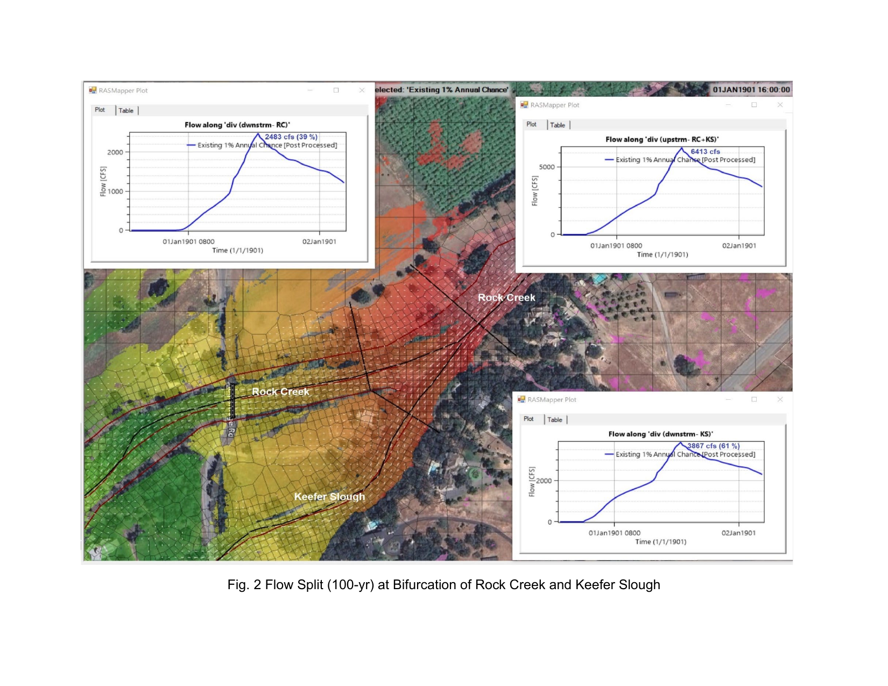
Loading deliverable 02…
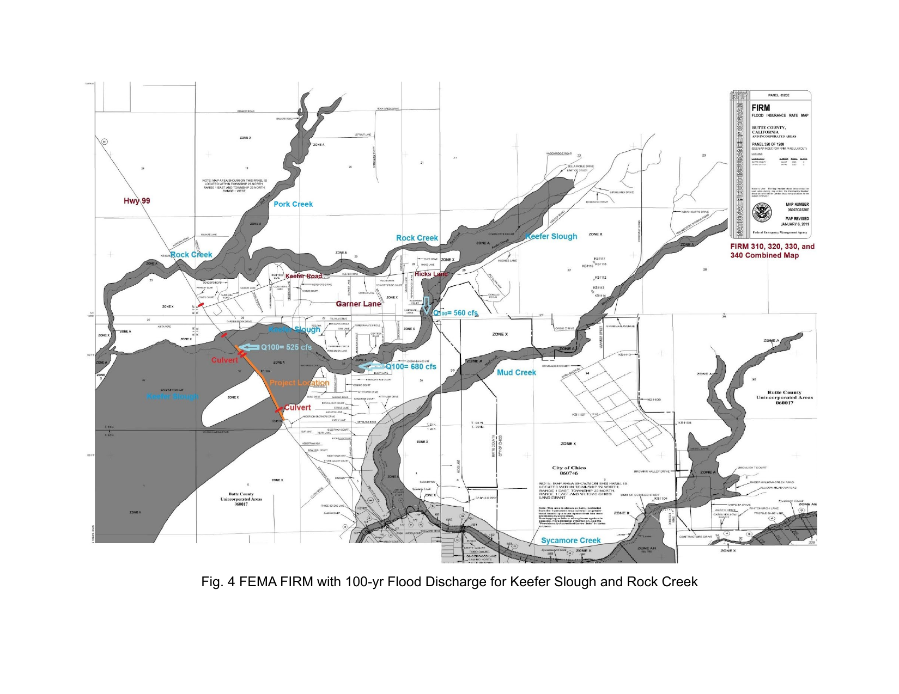
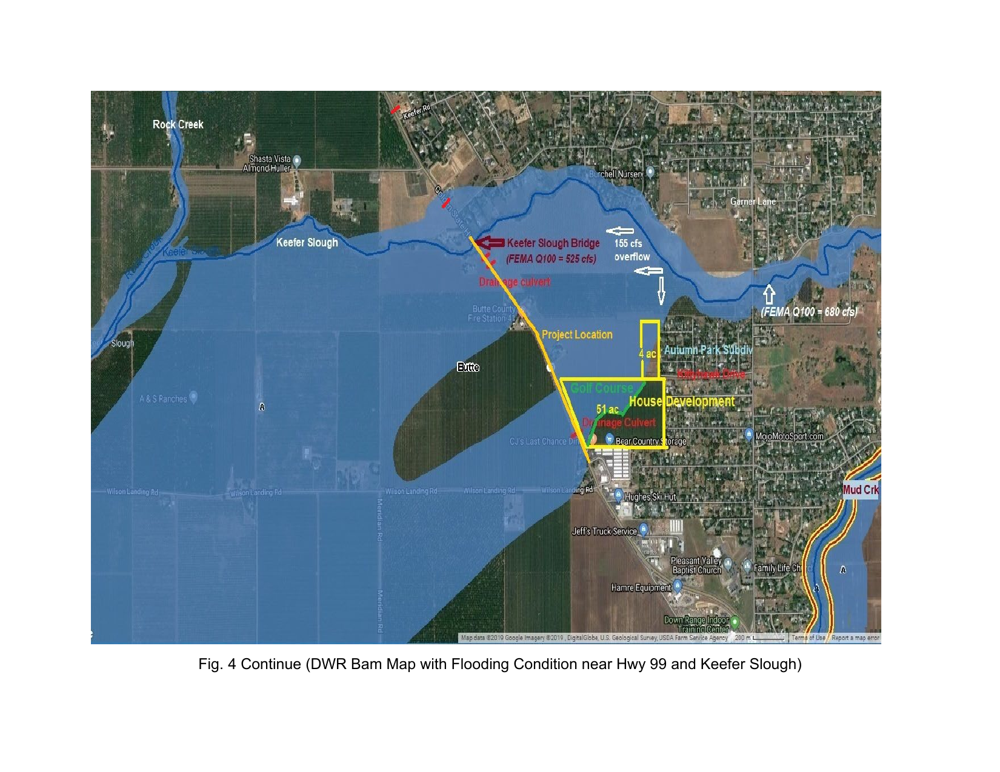
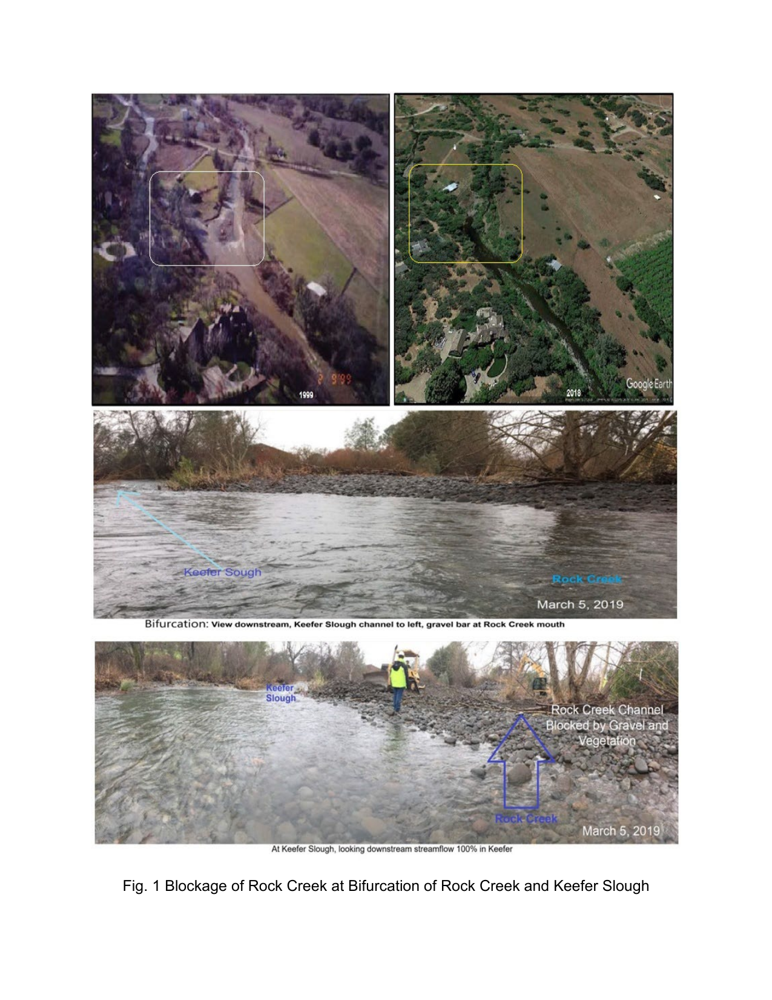
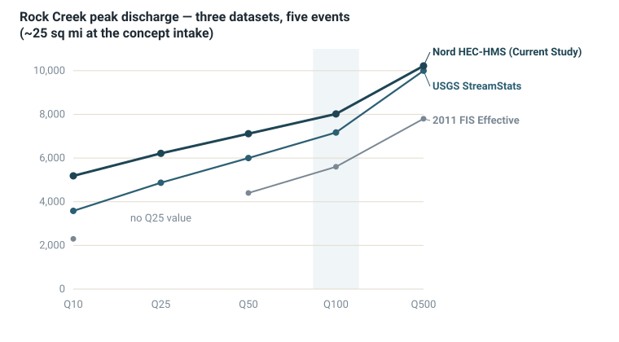
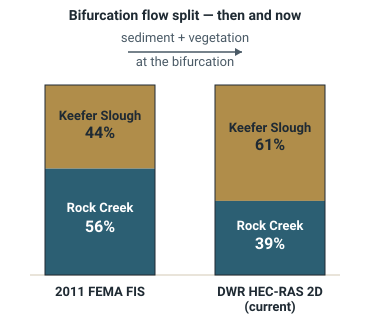
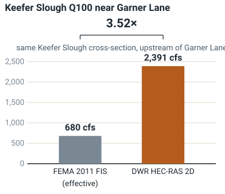
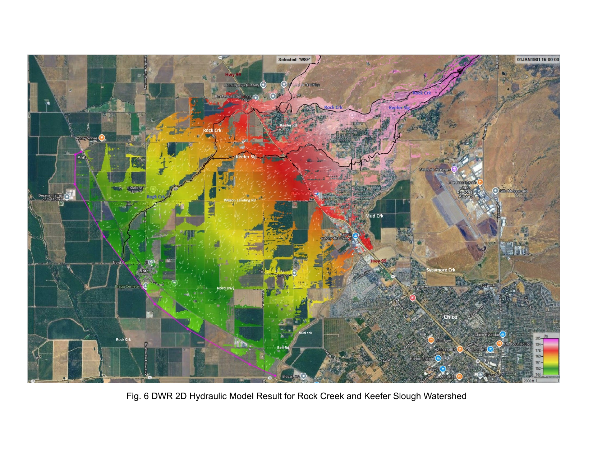
DWR HEC-RAS 2D hydraulic model — basin-wide water-surface-elevation result. The benchmarked precedent watershed: pink/red zones along Keefer Slough and Rock Creek are the highest-risk reaches. The concept on this dashboard sits upstream of this view and seeks to reduce volume and intensity reaching the regulated floodplain shown here. Source: Caltrans D3, Fig. 6.
Loading deliverable 03…
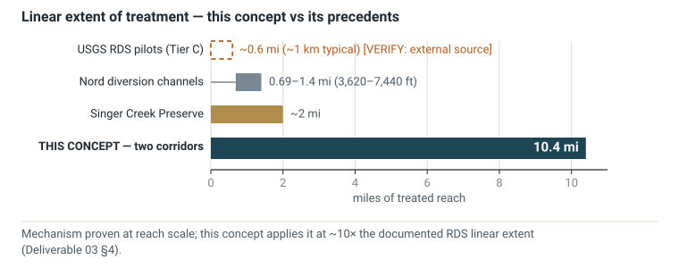
[VERIFY: external source], rendered dashed/hollow per the dashboard’s unconfirmed-value convention) · Nord diversion channels 0.69–1.4 mi (3,620–7,440 ft) · Singer Creek ~2 mi · this concept 10.4 mi. The mechanism is well-supported at reach scale; the watershed-scale application (~10× the documented RDS linear extent) is the part with less direct precedent. Source: Deliverable 03 §2.1, §4, §6.
Loading deliverable 04…
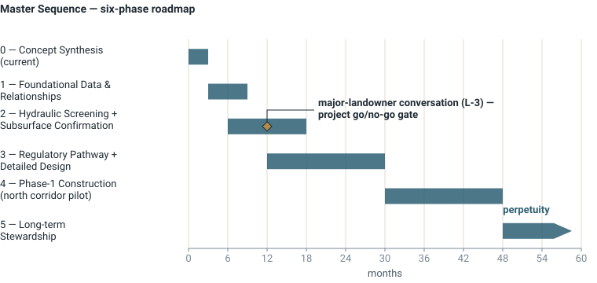
Loading deliverable 05…
![Data-flow diagram of the five-sheet screening workbook: a README metadata box; shaded user-editable Inputs_Hydrology and Inputs_Design sheets feeding Calc_Peak_Reduction (Q_upstream across 4 datasets and 5 events; diversion, trigger, corridor and weir parameters) and Calc_Recharge_Volume (infiltration rates, favorable fraction, days wetted); both calculation sheets feed the gold-outlined Output_Summary page, delivering the peak-reduction 60-case sweep and the annual acre-feet-per-year three-scenario result.](assets/fig-05-sheet-flow.svg)
Inputs_Hydrology, Inputs_Design) are user-editable; Calc_Peak_Reduction runs the 4 datasets × 5 events × 3 attenuation cases = 60-case sweep, Calc_Recharge_Volume produces the three-scenario annual estimate, and both land on the single-page Output_Summary stakeholders see. Source: Deliverable 05 §2, §6, §7, §9.
Loading deliverable 06…
Annual recharge (central)
~5,000–7,000 AF/yr
~60–90% of Vina Subbasin annual storage growth — §1
Total capital (central)
~$30 M
low ~$17.5 M · high ~$50 M — §3
Grant-fundable share
~75%
~$22 M across Prop 4, Flood-MAR, BRIC, NRCS — §5.2
Beneficiary cost
~$77/AF
beneficiary-share levelized · total-project ~$308 · grant-funded ~$212 — §6.1.4
Loading deliverable 07…
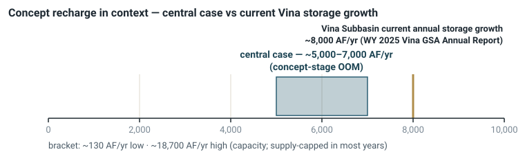
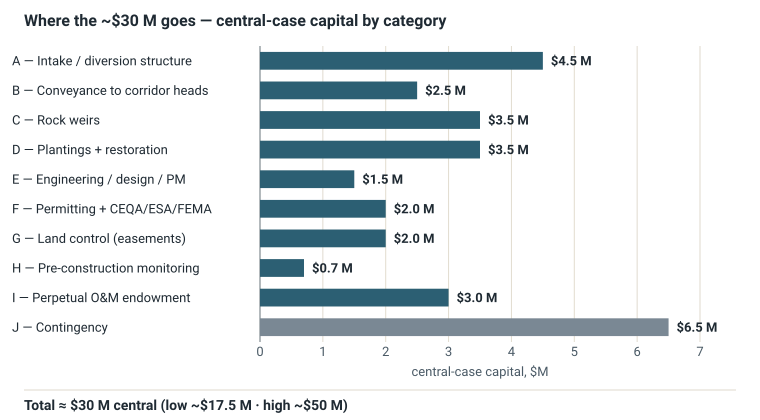
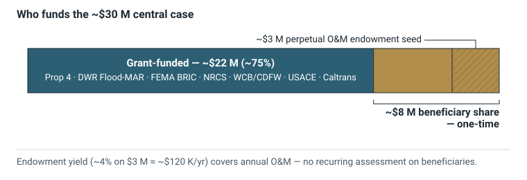
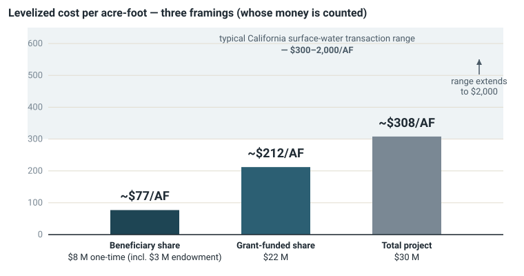